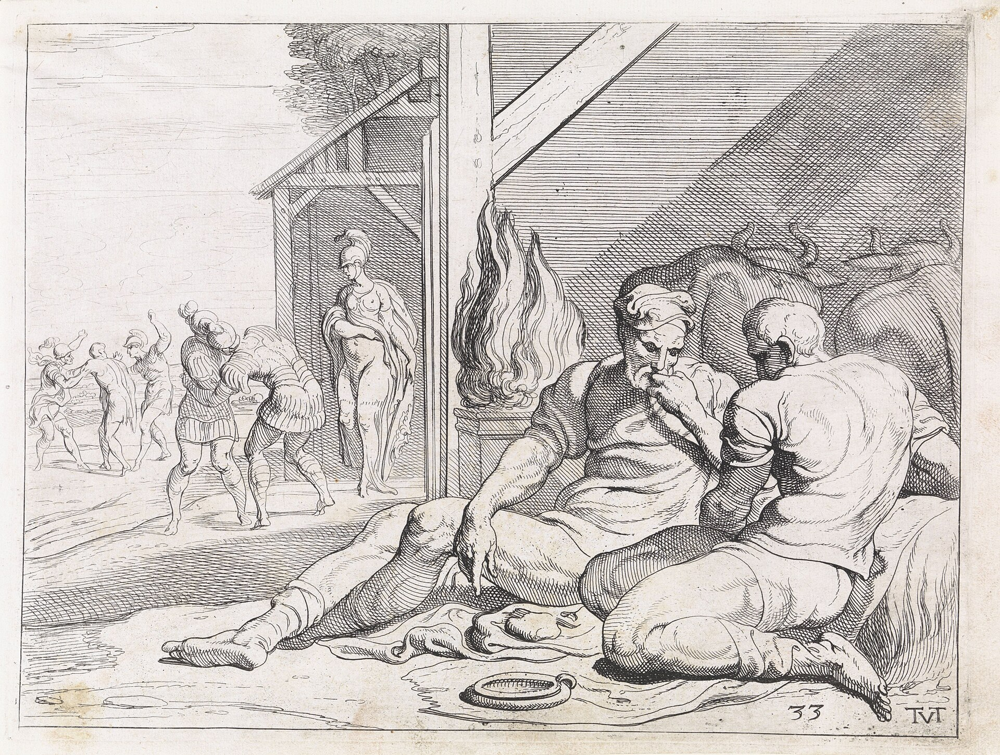

Песнь 14 из 24
У свинопаса Эвмея

Кратко
Неузнанный Одиссей приходит к верному свинопасу Эвмею. Тот радушно принимает странника, кормит, сетует на буйство женихов и горюет о пропавшем господине. Одиссей испытывает его, рассказывая вымышленную «критскую» историю своей жизни. Эвмей остаётся преданным и гостеприимным.
Главные моменты
- Образ верного простолюдина Эвмея — нравственный противовес женихам.
- «Критские россказни» Одиссея (его фирменная ложь-прикрытие).
- Тема истинного гостеприимства бедняка.
Значение
Закрепляет тему верности; даёт Одиссею союзника и убежище.